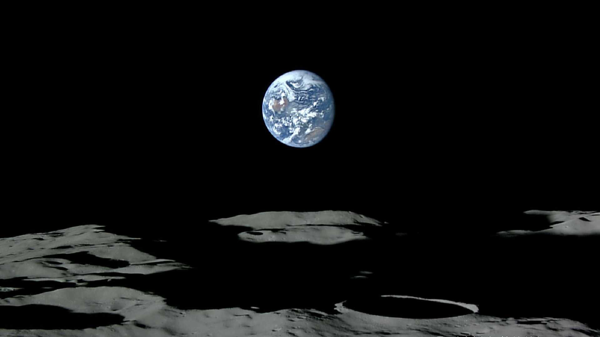
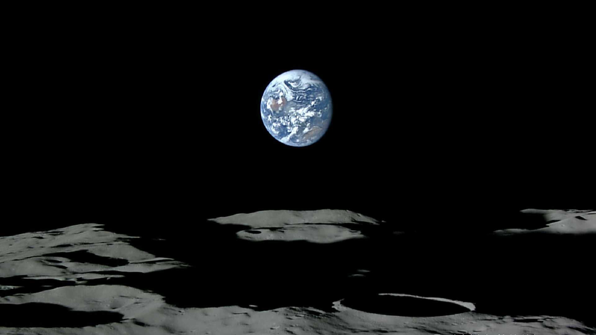

小川裕生のホームページにようこそ！
Welcome! My favorite is traveling round the world.  趣味の旅行 Travel 自己紹介 AI解説 Since October 2002 Update : February 25 2026

趣味の旅行 Travel 自己紹介 AI解説
Since October 2002 Update : February 25 2026